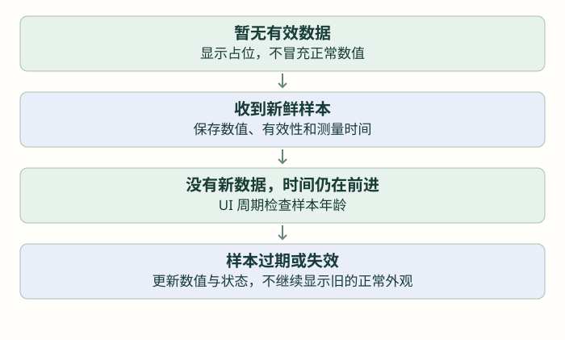

让界面持续正确：数据、定时器与生命周期
把有效性、时间和对象寿命纳入界面设计，处理数据过期、页面退出和多任务交接。
前置：完成上一篇「让界面响应：事件、输入与页面切换」。各篇独立示例按说明替换，不把多份页面创建循环叠在一起。
页面会动以后，再接入真正的数据
界面上的 72 不只是字符串，它来自某次测量或业务计算。页面还需要知道数据是否有效、什么时候获得、是否已经过期。只保存数值，不保存状态，容易让旧值一直以正常外观留在屏幕上。
先用模拟数据把这一套行为做清楚，再接传感器。不要把模拟曲线、占位值或历史统计显示成当前测量。本篇采用三秒过期仅作编程练习，实际项目的业务阈值需要按相应模块定义。

学生已经有 C 结构体基础，可以把一份样本定义为 value、valid、measured_ms 三个字段。页面显示函数的输入是一份完整、稳定的样本快照，而不是在绘图过程中到处读取会变化的零散全局变量。
普通 C 数据结构，不依赖 LVGL；时间单位约定为毫秒
typedef struct {
unsigned value;
uint8_t valid;
uint32_t measured_ms;
} lesson_sample_t;创建一次对象，按样本状态更新它
前面已会标签创建和格式化文字。现在把显示函数分成三种路径：无效显示 --，过期显示 -- 并说明原因，新鲜有效才显示数值。用无符号时间差比较，避免直接比较绝对截止时间时忽略计数回绕；这里约定数据年龄不会跨越整个 32 位计数周期。
独立页面例子 · create 一次；update 从同一 UI 执行路径调用，页面删除后清理指针
static lv_obj_t *sample_value;
static lv_obj_t *sample_state;
void lesson_sample_view_create(lv_obj_t *parent)
{
sample_value = lv_label_create(parent);
lv_obj_align(sample_value, LV_ALIGN_CENTER, 0, -15);
lv_label_set_text(sample_value, "--");
sample_state = lv_label_create(parent);
lv_obj_align(sample_state, LV_ALIGN_CENTER, 0, 20);
lv_label_set_text(sample_state, "No data");
}
void lesson_sample_view_update(const lesson_sample_t *sample, uint32_t now)
{
if (sample_value == NULL || sample_state == NULL || sample == NULL) return;
if (!sample->valid) {
lv_label_set_text(sample_value, "--");
lv_label_set_text(sample_state, "No data");
} else if ((uint32_t)(now - sample->measured_ms) >= 3000U) {
lv_label_set_text(sample_value, "--");
lv_label_set_text(sample_state, "Stale");
} else {
lv_label_set_text_fmt(sample_value, "%u", sample->value);
lv_label_set_text(sample_state, "Fresh");
}
}更新函数不是只在有新样本时才调用。即使传感器停止发送，时间仍会前进，页面也应进入过期状态。因此要让普通 UI 更新流程周期检查，而不是等下一次数据到达才发现上一笔已经太旧。
需要周期动作时，用 LVGL 定时器，不在回调里等待
例如每 100 ms 检查样本状态。LVGL 的定时器不是另一条 MCU 硬件中断，它由 lv_timer_handler 的普通处理流程调用。lv_timer_t 是定时器对象类型；回调签名为 void callback(lv_timer_t *timer)。
| 接口 | 参数与返回 | 用途 |
|---|---|---|
| lv_timer_create | 回调函数、周期毫秒数、附加指针；返回定时器指针 | 安排周期检查 |
| lv_timer_del | 定时器指针；无返回值 | 停止并删除，不再访问原对象 |
| lv_timer_pause / lv_timer_resume | 定时器指针；无返回值 | 暂时停用、恢复周期处理 |
下面的模拟数据与定时器放在同一个应用模块。先创建标签，再建立定时器；callback 只取时间并更新现有对象，没有 HAL_Delay。lv_tick_get 无参数，返回 LVGL 当前毫秒计数；本练习的样本时间也使用同一个计数基准。
在 UI 初始化后调用一次；配合前面的样本类型与页面函数，不重复启动
static lesson_sample_t demo_sample;
static lv_timer_t *sample_timer;
static void sample_timer_cb(lv_timer_t *timer)
{
(void)timer;
lesson_sample_view_update(&demo_sample, lv_tick_get());
}
void lesson_sample_start(void)
{
lesson_sample_view_create(lv_scr_act());
demo_sample.value = 72;
demo_sample.valid = 1;
demo_sample.measured_ms = lv_tick_get();
sample_timer = lv_timer_create(sample_timer_cb, 100, NULL);
}如果 handler 被其他长任务阻塞，定时器回调也会迟到；“100 ms”不是另一个能抢占 CPU 的保证。倒计时或动画应根据真实经过的时间计算，不用回调执行次数假装精确时间。
页面离开以后，谁还在引用那些对象？
对象删除时，其子对象也会被删除；保存的 C 指针不会自动变 NULL。定时器或其他回调若继续用旧指针，就可能访问已释放内存。先停止持有对象引用的周期工作，再删除页面，最后清理应用指针。
lv_obj_del(obj) 接收对象指针、无返回值，同步删除该对象及其子对象。下面是已有页面模块的关闭片段，销毁后若还要显示，必须按创建流程重新获得指针。
同一 UI 路径中的关闭操作 · 这里只删除本练习的两个标签，不删除整个活动屏幕
if (sample_timer != NULL) {
lv_timer_del(sample_timer);
sample_timer = NULL;
}
if (sample_value != NULL) {
lv_obj_del(sample_value);
sample_value = NULL;
}
if (sample_state != NULL) {
lv_obj_del(sample_state);
sample_state = NULL;
}仓库 ui_alert.c 把药丸覆盖层放在 lv_layer_top() 返回的顶层对象上，所以它不会自动随某个 tile 离开；这对跨页告警有用，但也要求显示、隐藏和定时器有明确管理。这里的动画或定时器都不能凭页面不可见就认定已经停止。
先单线程把流程写清楚，再接多任务
本课程默认只有 UI 所属执行路径调用对象 API。已经学习 FreeRTOS 后，可通过队列等方式把样本和业务意图交给 UI；未学操作系统时，就在主循环里先收集，再更新页面。volatile 不能替代锁，也不能保证多个字段组成一份一致快照。
项目当前 UI 与 app_tick 在 Sensor_Task 路径中组织；其他路径应提交状态，而不是同时修改 LVGL 对象。回到 ui_spo2.c 查看有效性处理，再对照 app.c 的周期更新。文件中的模拟波形和 PI 占位显示不能当成实测指标，阅读时要分清真实来源。
练习最后做三次切换：新数据到达、数据停止直到过期、删除页面后继续推进 handler。前两种要显示正确状态，第三种不得继续访问旧对象；恢复页面后再重新启动相应周期工作。
检查理解
参考与项目源码
按仓库实际的 LVGL 8.3.11 与本地头文件组织接口。教学图与网页模型不是设备实测；源码引用均使用 GitHub 文件页。完整索引见 资料来源。